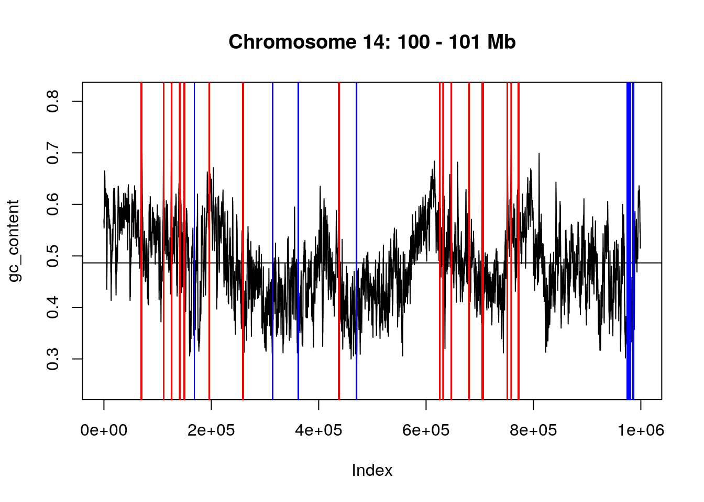

Chapter 4 Manipulating sequences with Biostrings
Learning objectives
In this chapter, we will learn about a new object, that is specialised for the manipulation of biological sequences.
- Learn about the fasta format format for biological sequences.
- Learn about the
*StingSetclasses. - Working with whole genomes.
- Find patterns in sequence data.
This chapter is based on the course material presented by Martin Morgan during the Bioinformatics Summer School 2019 at Louvain-la-Neuve, Belgium.
4.1 Working with sequences - a first start
It is easy to use standard R character vectors to define DNA sequences. Below, we create a vector with three short sequences.
sequences <- c("AAATCGA", "ATACAACAT", "TTGCCA")
sequences## [1] "AAATCGA" "ATACAACAT" "TTGCCA"We can ask about properties of these sequences and perform some operations using base R function:
length(sequences)## [1] 3nchar(sequences)## [1] 7 9 6sequences[c(1, 3)]## [1] "AAATCGA" "TTGCCA"sample(sequences)## [1] "TTGCCA" "AAATCGA" "ATACAACAT"However, once is we want to perform biologically relevant operations, base R fails us; it has no notion of operations relevant to DNA sequences, e.g.,
reverseComplement(sequences)Likewise, we can name a variable anything, the semantic meaning of the variable name is not enforced by R
not_a_dna_sequence <- "I love R"
4.2 Working with sequences - using Biostrings
The Bioconductor Biostrings package can do all that base R can do, in addition to knowing about the semantics of the sequences is handles. Let’s start by loading the package:
library("Biostrings")For more information about the Biostrings package, see the vignettes available online the package package.
4.2.1 DNAStringSet()
The DNAStringSet class that knows about DNA sequences. We can easily create a DNAStringSet from our character vector with
dna <- DNAStringSet(sequences)
dna## A DNAStringSet instance of length 3
## width seq
## [1] 7 AAATCGA
## [2] 9 ATACAACAT
## [3] 6 TTGCCA► Question
Does the object dna support the operations illustrated above for a character vector, especially length(), nchar(), [, and sample()?
► Solution
► Question
Prove to yourself that at least some other useful, DNA-specific, functions exist, e.g., reverse() and reverseComplement().
► Solution
► Question
What happens when you try to create a DNAStringSet() from an object such as not_a_dna_sequence, defined above, that does not contain a DNA sequence? Warning: the message is quite cryptic, can you provide a ‘human’ translation?
► Solution
► Question
Why does DNAStringSet("ACGTMRW") not create an error, since MRW are not standard nucleotides? For hints, see the section ’The DNA alphabet:" on the help page ?DNAString.
► Question
What is the difference between a DNAString and a DNAStringSet?
► Solution
4.2.2 Learning more about a class
The function DNAStringSet() returns an object that has a particular class
class(dna)## [1] "DNAStringSet"
## attr(,"package")
## [1] "Biostrings"Associated with the class are a series of methods (i.e. functions that have a behaviour that is tuned for that class) that operate on the class.
► Question
Discover many (unfortunately, not all) methods acting on an object of class DNAStringSet using methods(class = "DNAStringSet"). Verify that reverseComplement is among those methods.
Help pages describing a particular method can be found using ?, with the search query quoted and with tab-completion providing hints on what the appropriate help topic is.
► Question
Find the help page for the reverseComplement method operating on a DNAStringSet object, using ?reverseComplement.
Help pages provide a description of the technical details required for creating classes and using methods. Vignettes provide a more narrative description of overall package use.
► Question
Use browseVignettes(package = "Biostrings") to see vignettes available for this package; explore a few vignettes to get a sense of possible content.
4.3 Reading DNA sequence data from a file
It is unlikely that we would enter 1000’s of DNA sequences ‘by hand’. Instead, we might read the data from a standard file format. For DNA sequences the standard file format is often a ‘FASTA’ file, sometimes abbreviated with an extension .fa and often compressed with an additional extension .fa.gz. An example of a FASTA file containing DNA sequences of the 2000bp upstream nucleotides of all genes annotated in the Drosophila melanogaster dm3 genome build, is distributed with the Biostrings package. Here’s the path to the FASTA file.
fa_file <-
system.file(package="Biostrings", "extdata", "dm3_upstream2000.fa.gz")► Question
Take a peak at the structure of a FASTA file by looking at the first five lines. You can use the readLines function, setting the n parameter to read only a limited number of files (see readLines).
► Solution
In this case, the first line is an identifier, containing information about the gene NM_078863 as well as the genomic coordinates of the sequence chr2L:16764737-16766736. The next lines are the DNA sequence. After a certain number of lines, a new record starts.
tail(readLines(fa_file, 44), 5)## [1] "cacgcacaccgatcgtcgaatcgaaaagctttcggggtcttacgggatcc"
## [2] "atgggtatcaagttgccccgtataaaaggcaagtttaccggttgcacggt"
## [3] ">NM_001201794_up_2000_chr2L_8382455_f chr2L:8382455-8384454"
## [4] "ttatttatgtaggcgcccgttcccgcagccaaagcactcagaattccggg"
## [5] "cgtgtagcgcaacgaccatctacaaggcaatattttgatcgcttgttagg"We could fairly easily write our own parser for this format, but this would be error-prone and unnecessary. Instread, we want to use the readDNAStringSet function from the Biostrings package for that.
dna <- readDNAStringSet(fa_file)
dna## A DNAStringSet instance of length 26454
## width seq names
## [1] 2000 GTTGGTGGCCCACCAGTGC...GTTTACCGGTTGCACGGT NM_078863_up_2000...
## [2] 2000 TTATTTATGTAGGCGCCCG...CGGAAAGTCATCCTCGAT NM_001201794_up_2...
## [3] 2000 TTATTTATGTAGGCGCCCG...CGGAAAGTCATCCTCGAT NM_001201795_up_2...
## [4] 2000 TTATTTATGTAGGCGCCCG...CGGAAAGTCATCCTCGAT NM_001201796_up_2...
## [5] 2000 TTATTTATGTAGGCGCCCG...CGGAAAGTCATCCTCGAT NM_001201797_up_2...
## ... ... ...
## [26450] 2000 ATTTACAAGACTAATAAAG...ATTAAATTTCAATAAAAC NM_001111010_up_2...
## [26451] 2000 GATATACGAAGGACGACCT...TTTGAGTTGTTATATATT NM_001015258_up_2...
## [26452] 2000 GATATACGAAGGACGACCT...TTTGAGTTGTTATATATT NM_001110997_up_2...
## [26453] 2000 GATATACGAAGGACGACCT...TTTGAGTTGTTATATATT NM_001276245_up_2...
## [26454] 2000 CGTATGTATTAGTTAACTC...AAGTGTAAGAACAAATTG NM_001015497_up_2...► Question
Query the object for basic properties, e.g., it’s length() and that number of character in each sequence (try table(nchar(dna))).
► Question
Use letterFrequency() to determine GC content of each of the DNA sequences in dna. The letters argument should be "GC"; as.prob = TRUE returns values between 0 and 1. The data is returned as a matrix with 1 column.
► Solution
► Question
What are the mean and standard deviation of the GC contents in the 26454 genes? What genes(s) has/have the highes GC content?
► Solution
► Question
Plot the distribution of GC frequencies in the dna object using base graphics hist() and plot(density()), and using ggplot().
► Solution


4.4 Tidy Bioconductor
Although Bioconductor emphasizes formal objects like DNAStringSet rather than tibble-like data frames, some of the ways one interacts with tidy data can be applied to Bioconductor objects. For instance, the GC content example might be written in ‘traditional’ form as
gc <- letterFrequency(dna, "GC", as.prob = TRUE)but could be written using pipes and to reesult in a tibble for easier down-stream manipulation
gc <-
dna %>%
letterFrequency("GC", as.prob = TRUE) %>%
tibble::as_tibble()
gc## # A tibble: 26,454 x 1
## `G|C`
## <dbl>
## 1 0.378
## 2 0.43
## 3 0.43
## 4 0.43
## 5 0.43
## 6 0.43
## 7 0.43
## 8 0.43
## 9 0.43
## 10 0.43
## # … with 26,444 more rows4.5 Subsetting sequences
As [ is used to subset a DNAStringSet, it can’t be used to take substrings of a sequence. This can be done with the subseq sequence.
subseq(dna, start = 1, end = 100)## A DNAStringSet instance of length 26454
## width seq names
## [1] 100 GTTGGTGGCCCACCAGTGC...TGACTCAAAACGAAAATG NM_078863_up_2000...
## [2] 100 TTATTTATGTAGGCGCCCG...TTTTGATCGCTTGTTAGG NM_001201794_up_2...
## [3] 100 TTATTTATGTAGGCGCCCG...TTTTGATCGCTTGTTAGG NM_001201795_up_2...
## [4] 100 TTATTTATGTAGGCGCCCG...TTTTGATCGCTTGTTAGG NM_001201796_up_2...
## [5] 100 TTATTTATGTAGGCGCCCG...TTTTGATCGCTTGTTAGG NM_001201797_up_2...
## ... ... ...
## [26450] 100 ATTTACAAGACTAATAAAG...GGCGTTGCAACATGGATC NM_001111010_up_2...
## [26451] 100 GATATACGAAGGACGACCT...ACAGTCTTCTGGTGCTGG NM_001015258_up_2...
## [26452] 100 GATATACGAAGGACGACCT...ACAGTCTTCTGGTGCTGG NM_001110997_up_2...
## [26453] 100 GATATACGAAGGACGACCT...ACAGTCTTCTGGTGCTGG NM_001276245_up_2...
## [26454] 100 CGTATGTATTAGTTAACTC...CTGTAGTTAGGAAGATTA NM_001015497_up_2...subseq(dna, start = 1, width = 100)## A DNAStringSet instance of length 26454
## width seq names
## [1] 100 GTTGGTGGCCCACCAGTGC...TGACTCAAAACGAAAATG NM_078863_up_2000...
## [2] 100 TTATTTATGTAGGCGCCCG...TTTTGATCGCTTGTTAGG NM_001201794_up_2...
## [3] 100 TTATTTATGTAGGCGCCCG...TTTTGATCGCTTGTTAGG NM_001201795_up_2...
## [4] 100 TTATTTATGTAGGCGCCCG...TTTTGATCGCTTGTTAGG NM_001201796_up_2...
## [5] 100 TTATTTATGTAGGCGCCCG...TTTTGATCGCTTGTTAGG NM_001201797_up_2...
## ... ... ...
## [26450] 100 ATTTACAAGACTAATAAAG...GGCGTTGCAACATGGATC NM_001111010_up_2...
## [26451] 100 GATATACGAAGGACGACCT...ACAGTCTTCTGGTGCTGG NM_001015258_up_2...
## [26452] 100 GATATACGAAGGACGACCT...ACAGTCTTCTGGTGCTGG NM_001110997_up_2...
## [26453] 100 GATATACGAAGGACGACCT...ACAGTCTTCTGGTGCTGG NM_001276245_up_2...
## [26454] 100 CGTATGTATTAGTTAACTC...CTGTAGTTAGGAAGATTA NM_001015497_up_2...subseq(dna[[1]], start = 1, end = 10)## 10-letter "DNAString" instance
## seq: GTTGGTGGCCsubseq(dna[[1]], start = 1, width = 10)## 10-letter "DNAString" instance
## seq: GTTGGTGGCC► Question
The start, end and with arguments can be vector of length > 1 themselves so as to generate sequences of different lengths. Create a new object that contains subsets of the first sequence of dna with, respectively nucleotides 1 to 1, 1 to 2, 1 to 3, …, 1 to 10.
► Solution
4.6 Working with genomes
BSgenome packages inside Bioconductor contain whole genome sequences as distributed by ENSEMBL, NCBI and others. In this next example we will load the whole genome sequence for Drosophila melanogaster from UCSC’s dm2 build, and calculate the GC content across chromosome 2L.
library("Biostrings")
library("BSgenome.Dmelanogaster.UCSC.dm2")
chr2L_range <- GRanges("chr2L", IRanges(1, seqlengths(Dmelanogaster)["chr2L"]))
chr2L_range## GRanges object with 1 range and 0 metadata columns:
## seqnames ranges strand
## <Rle> <IRanges> <Rle>
## [1] chr2L 1-22407834 *
## -------
## seqinfo: 1 sequence from an unspecified genome; no seqlengthschr2L_dna <- getSeq(Dmelanogaster, chr2L_range)
chr2L_dna## A DNAStringSet instance of length 1
## width seq
## [1] 22407834 CGACAATGCACGACAGAGGAAGCAGAACAG...GTTTCGAGTTAGTTGAAGGTGAGGGTGCTletterFrequency(chr2L_dna, "GC", as.prob = TRUE)## G|C
## [1,] 0.4190165► Question
Using letterFrequency, calculate the number and frequency of A, G, C and T nucleotides in chromosome 14.
► Solution
4.7 Additional exercises
► Question
Focusing on the region from base 10 million to 11 million along chromosome 2L, calculate the GC content across a sliding window of 5000 nucleotides (you can use the letterFrequencyInSlidingView functionn) and visualise it (see an example below). On that plot, show the mean GC content and highlight the regions that have a GC content > 0.5 and < 0.35.
Figure 4.1: GC content for chomosome 2L (10 - 11 Mb)
► Question
Visit the UniProt web page at https://www.uniprot.org/ and download the manually reviewed complete human proteome (containing about 20500 proteins). Do to so, choose Proteomes on the main page, then search for Homo sapiens, select it among the list of hits, choose the reviewed Swiss-Prot release, and download all entries in compressed fasta format.
► Question
Load the file into R. Beware though that these are protein sequences, composed of amino acids. Read the ?readDNAStringSet manual page to find a more appropriate function. How many sequences are there? What’s the average. max and min length of the proteins?
► Question
Load the up_selected data from the rWSBIM1322 data (version 0.1.1 or later) and use it to create a subset of the object created above. To to so, you will need to match the matching protein identifiers from that vector and the names of the AAStringSet above.
► Question
Among the proteins of interest (that where also found in the original data), how many match the following patterns: DDVF, DEVF EDVF or EEVF? Do you consider this to be a high number?
The identification of patterns in sequences (not specifically biological sequences) is called pattern matching, which defines a whole syntax to define patterns. In particular, it is possible to define letter D or E as [DE]. To find the pattern of interest, use the str_detect function from the stringr package.
► Question
To assess if there is an overrepresentation of that pattern in the sequences of interest, repeat the calculation on all the other proteins.
Page built: 2019-11-05